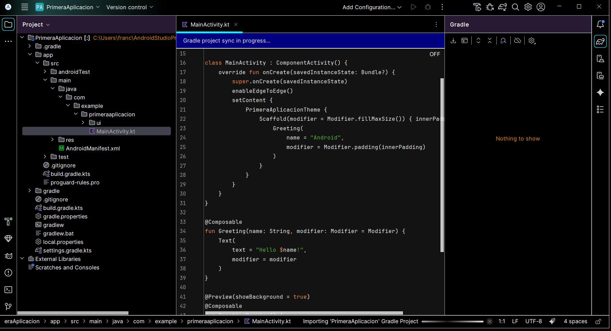
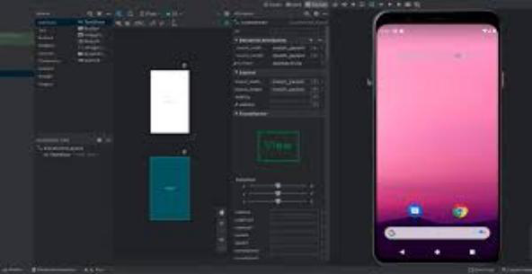

1.1.-Análisis de tecnologías para dispositivos móviles
1.1. Análisis de tecnologías para dispositivos móviles
Idea principal
Antes de programar una aplicación móvil hay que conocer el terreno de juego: qué dispositivos existen, qué redes usan, cómo se organizan sus sistemas operativos y qué tecnologías de desarrollo hay disponibles. Elegir bien la tecnología condiciona el rendimiento, el coste y el alcance de la app.
Un dispositivo móvil es, en la práctica, un ordenador de bolsillo diseñado para funcionar con batería, conexión inalámbrica y pantalla táctil. Desde los PDA y los primeros smartphones con teclado físico se ha pasado a terminales con pantallas táctiles de alta resolución, CPU multinúcleo, GPU potentes y múltiples sensores. Las mejoras en los dispositivos y en las redes ha propiciado la aparición de un gran mercado de aplicaciones, y para nutrir ese mercado se han creado numerosos entornos de desarrollo.
El objetivo de este tema no es memorizar definiciones aisladas, sino entender qué podemos exigir a cada tecnología y saber aplicarla en situaciones cercanas al trabajo real.
| Código | Descripción |
|---|---|
| RA 1 | Aplica tecnologías de desarrollo para dispositivos móviles evaluando sus características y capacidades. |
| CE a) | Se han analizado las limitaciones que plantea la ejecución de aplicaciones en los dispositivos móviles. |
| CE b) | Se han identificado las tecnologías de desarrollo de aplicaciones para dispositivos móviles. |
| CE c) | Se han instalado, configurado y utilizado entornos de trabajo para el desarrollo de aplicaciones para dispositivos móviles. |
| CE d) | Se han identificado configuraciones que clasifican los dispositivos móviles en base a sus características. |
| CE e) | Se han descrito perfiles que establecen la relación entre dispositivos y tipos de aplicaciones. |
| CE f) | Se han reconocido las limitaciones técnicas de los dispositivos móviles. |
| CE g) | Se han analizado las capacidades gráficas y sonoras de los dispositivos en base a las necesidades de la aplicación. |
| CE h) | Se han reconocido los mecanismos de seguridad y distribución de software específicos de dispositivos móviles. |
Qué deberías saber al terminar
Al acabar este tema deberías poder:
- describir los tipos de dispositivos móviles y sus limitaciones para el desarrollo;
- repasar la evolución de las redes de comunicaciones móviles y su capacidad actual;
- comparar el desarrollo nativo con el multiplataforma y elegir según el caso;
- instalar Android Studio y crear un primer proyecto de aplicación;
- configurar emuladores (AVD) y justificar cuándo es necesario un dispositivo real;
- explicar la estructura de un proyecto Android y el ciclo de vida de una aplicación.
Mapa del tema
En este documento vamos a seguir esta secuencia:
- dispositivos móviles: evolución, tipos y características;
- redes de comunicaciones móviles: de la 0G a la 6G;
- sistemas operativos móviles y tecnologías de desarrollo;
- emuladores: configuraciones, perfiles y dispositivos soportados;
- aplicaciones móviles: estructura, jerarquía de clases y ciclo de vida;
- modificación de aplicaciones existentes y entorno de ejecución del administrador de aplicaciones.
1. Dispositivos móviles: evolución, tipos y características
Un dispositivo móvil es un aparato de pequeño tamaño, portable, con autonomía de funcionamiento suministrada por una batería, conexión permanente o semipermanente a una red de comunicaciones y con varias funciones. La función original de los dispositivos móviles era llamar por teléfono; hoy un smartphone puede hacer muchas funciones que antes realizaban aparatos y sistemas diferentes.
Definición
Dispositivo móvil: aparato de pequeño tamaño, portable, con autonomía de funcionamiento suministrada por una batería, conexión permanente o semipermanente a una red de comunicaciones y con varias funciones.
Es importante conocer las características de los dispositivos para los cuales vamos a diseñar y desarrollar las aplicaciones, porque sus limitaciones condicionan el diseño.
Características principales:
| Característica | Qué implica |
|---|---|
| Tamaño | Para ser portable debe tener un tamaño reducido, pudiendo portarse incluso durante actividades deportivas. |
| Movilidad | Por su tamaño y no dependencia de cableado: tamaño, batería duradera y comunicación inalámbrica. |
| Conectividad | Uso de comunicaciones inalámbricas; las redes han evolucionado mucho y han permitido la incorporación masiva de estos dispositivos. |
| Capacidad de procesado | Requieren microprocesadores capaces de realizar los procesos de cálculo y de gestionar la información a la que acceden. |
Características secundarias: sistema operativo, ergonomía, diseño, tamaño de la pantalla y gadgets compatibles.
Tipos de dispositivos móviles:
- Smartphones. Con una función principal de teléfono móvil, pero por sus características se parece a un ordenador personal: pantalla de alta calidad, múltiple conectividad, gran capacidad de procesamiento y almacenamiento y dispositivos incorporados (cámara, sensores, GPS).
- Tablets. Con tamaño intermedio entre el ordenador y el móvil. Son ligeros, autónomos y con fácil manejo (pantalla táctil).
- PDAs (Personal Digital Assistant). Dispositivos que intentan combinar prestaciones para servir de organizador personal. Su uso está en declive.
- eBooks. Libro electrónico. Ligeros, con gran capacidad de almacenaje y tinta electrónica.
- Wearables. El más difundido es el smartwatch o reloj inteligente.
Ejemplo
Una misma aplicación de mensajería debe funcionar en un móvil de 6 pulgadas, una tablet de 10 y un reloj: misma lógica, tres interfaces radicalmente distintas.
Limitaciones para el desarrollo:
- La mayoría de las limitaciones están relacionadas con el hardware, que puede limitar la capacidad de procesamiento y almacenaje, aunque se ha mejorado mucho.
- Diversidad en el tamaño de la pantalla: debemos diseñar con estilo responsive o tener en cuenta las variaciones.
- No todos los teléfonos tendrán los mismos sensores y GPS.
- No todas las herramientas y librerías de terceros son soportadas por todos los dispositivos.
- Antes de lanzar una aplicación a explotación se debe probar en varios dispositivos reales o emuladores.
Aclaración
Hoy hay más de 5 millones de aplicaciones repartidas entre los grandes repositorios (Play Store, App Store y otras). Las descargas anuales superaban los 40 billones en 2020 (15% juegos) y los 250 billones en 2024 (un 34% juegos): el mercado justifica el esfuerzo de conocerlo bien.
2. Redes de comunicaciones móviles
Las redes de comunicaciones móviles han ido evolucionando con el tiempo. Actualmente se está implantando la quinta generación (5G), pero ya se investiga la 6G.
| Generación | Época | Tecnología | Velocidad típica | Hitos |
|---|---|---|---|---|
| 0G | Años 30-40 | Onda de radio (PTT, IMTS) | Solo voz | Walkie talkies; difusión en la II Guerra Mundial |
| 1G | 1977 | AMPS (EE. UU.), NMT (Escandinavia) | Solo voz, analógica | Primera red celular en Chicago; equipos grandes y pesados, baja seguridad |
| 2G | Años 90 | GSM (Europa), IS-136 (EE. UU.) | Voz + datos digitales | Tarjeta SIM, SMS; tecnología digital |
| 2.5G/2.75G | Finales 90 | GPRS, EDGE | Navegación básica | Redes de respaldo aún vigentes |
| 3G | 2001 (Japón) | UMTS, CDMA | Hasta 2 Mbps | Convergencia voz/datos; navegación fluida; auge de BlackBerry |
| 3.5G/3.75G | ~2005 | HSPA | Hasta 14 Mbps | Mejora de la 3G en velocidad |
| 4G | 2010 | LTE, UMTS, WiMax | 60 Mbps bajada / 40 subida | Bandas 800/1800/2600 MHz; señal de televisión |
| 4G+ | 2016 | LTE-A | 300 Mbps / 50 Mbps | Banda de 700 MHz |
| 5G | 2017 (MWC Barcelona) | NR | 1-10 Gbps | Antenas mejoradas; IoT, WSN, AR/VR comunicada |
| 6G | Investigación | Satélites | Hasta 100 Gbps | Cobertura global; frecuencias más elevadas |
Ejemplo
Una app de vídeo en streaming necesita el ancho de banda de una 4G para no tartamudear; un chat funciona incluso en 2G de respaldo. La generación de red disponible condiciona qué puede hacer tu aplicación y cómo debe degradarse con elegancia cuando la red empeora.
Atención
El contexto de red cambia constantemente (red, luz, batería, orientación), así que la app debe ser responsiva, eficiente y resiliente: capaz de pausar y reanudar sin perder estado.
3. Sistemas operativos móviles
Los sistemas operativos (OS) móviles, al igual que en los ordenadores personales, gestionan el conjunto de programas de bajo nivel que permiten la abstracción del hardware concreto y proporcionan servicios a las aplicaciones que se ejecutan sobre él. La mayoría de los SO móviles se organizan en un sistema de capas:
- Kernel o núcleo. Permite el acceso a los elementos del hardware, ofreciendo servicios a las capas superiores a través de controladores o drivers, como la gestión de procesos, gestión de la memoria o el sistema de archivos.
- Middleware. Conjunto de módulos que permite la existencia de aplicaciones. Es transparente al usuario.
- Gestor de aplicaciones. Aplicaciones nativas o multiplataforma.
Android
Es el sistema operativo líder en el mercado. Fue lanzado por la Open Handset Alliance (OHA) en 2007, a través de una agrupación de 78 compañías lideradas por Google. Sus capas, de abajo arriba:
- Kernel de Linux.
- Capa de abstracción de hardware (HAL).
- Runtime. Cada app ejecuta sus propios procesos con sus propias instancias de tiempo de ejecución.
- Biblioteca C/C++ nativas. Muchos componentes y servicios están programados en estos lenguajes.
- Framework de API Java. Acceso a funciones de Android a través de una API.
- Apps del sistema. Conjunto de apps nativas para correo electrónico, navegador, calendario...
iOS
Fue desarrollado por Apple, se llamó originalmente iPhone OS y es un derivado de Mac OS X. Su principal punto fuerte es la combinación excelente entre hardware y software, así como el uso de pantalla multitáctil desde sus comienzos. También está organizado en capas:
- Cocoa Touch. Capa superior, la que los usuarios utilizan para interactuar con las aplicaciones.
- Media services. Provee los servicios de audio, gráficos y multimedia a la capa superior.
- Core services. Proporciona servicios imprescindibles del sistema para las aplicaciones (acceso a bases de datos, acceso a red...).
- Core OS. Núcleo del SO con las características de bajo nivel.
Otros sistemas operativos móviles
- Windows Phone. Desarrollado por Microsoft y lanzado en 2010.
- BlackBerry OS.
- Symbian.
- Firefox OS. Desarrollado por Mozilla, con núcleo Linux y basado en HTML5, pensado en dispositivos de gama baja.
- Ubuntu Touch.
- HarmonyOS. Desarrollado por Huawei Technologies, diseñado además para la intercomunicación de dispositivos IoT.
4. Tecnologías de desarrollo: nativas y multiplataforma
Para la programación de dispositivos móviles existen una gran cantidad de herramientas, entornos y lenguajes. En primer lugar hay que decidir qué lenguaje se va a usar y, por otra parte, si se opta por desarrollo nativo o multiplataforma.
Desarrollo nativo
Supone emplear las herramientas y lenguajes propios de cada sistema operativo:
- Sus principales ventajas: apps muy optimizadas, máximo rendimiento y mayor flexibilidad para el programador.
- Su principal desventaja: si se quiere desarrollar para otras plataformas, el tiempo de desarrollo es mayor.
| Plataforma | Lenguajes |
|---|---|
| Android | Java, Kotlin |
| iOS | Objective-C, Swift, Cocoa Touch |
| Windows Phone | C# + XAML |
Desarrollo multiplataforma
Distinguimos dos tipos:
- Compilado a nativo. Usa una plataforma intermedia, como Xamarin, que con un único lenguaje (C# sobre .NET) puede programar para varias plataformas. Las aplicaciones se compilan después en código nativo, lo que le da el mismo rendimiento que el desarrollo nativo.
- Basado en HTML5. Utilización de herramientas basadas en HTML5 que generan aplicaciones para todas las plataformas, como PhoneGap/Cordova o Ionic. No tienen el mismo rendimiento que las aplicaciones nativas.
Lenguajes y entornos destacados
Kotlin. Fue desarrollado por JetBrains en 2016. Dentro del desarrollo nativo Android está tomando gran fuerza por encima de Java, al ser señalado por Google como lenguaje principal. Corre sobre la máquina virtual de Java. Sus ventajas: simplicidad, más seguro que Java, robusto y orientado a objetos, con acceso a gran número de librerías, sintaxis más limpia (necesita menos código) y coexistencia simultánea con Java.
Java. Es el lenguaje nativo original para Android. Paralelo a Java es necesario conocer bien XML para el desarrollo de aplicaciones. Herramienta de desarrollo: Android Studio, un IDE basado en IntelliJ IDEA que se lanzó para reemplazar a Eclipse.
Ionic. Permite desarrollar y desplegar aplicaciones híbridas que funcionan en múltiples plataformas (iOS, Android, escritorio y web como PWA) con una única base de código. Ofrece un diseño limpio, sencillo y funcional. Está construido sobre tecnologías web (HTML, CSS y JavaScript) y se puede usar con los frameworks frontend más populares: Angular, React y Vue.
Flutter. SDK de Google para crear aplicaciones Android e iOS, para móvil, web y escritorio, desde una única base de código. Su lenguaje es Dart y se caracteriza por el desarrollo rápido gracias a Hot Reload: se pueden hacer cambios sin parar y arrancar la aplicación, reduciendo las esperas.
Xamarin. Entorno de desarrollo creado por Microsoft que permite crear aplicaciones Android e iOS en C#. Es gratuito y va integrado en Visual Studio. Pese a no desarrollar para Android en Java, permite crear una aplicación nativa que asegura una buena experiencia de usuario.
NativeScript. Entorno de desarrollo de código abierto para crear aplicaciones móviles Android e iOS. Lenguajes: Angular, Vue.js, TypeScript o JavaScript. Su principal ventaja es el rendimiento nativo: defines una vez y se adapta para ejecutarse en todas partes, adaptando la interfaz a dispositivos y pantallas concretos.
Ejemplo
Para una app corporativa interna que deba salir ya para Android e iOS con un equipo pequeño, Flutter o Xamarin reducen a la mitad el esfuerzo. Para una app de realidad aumentada con máximo rendimiento gráfico, el camino razonable es nativo: Kotlin en Android, Swift en iOS.
Aclaración
Unity3D es un ejemplo de entorno específico para videojuegos, frente a entornos de carácter general como Android Studio. En este módulo nos centraremos en el entorno Android Studio + Kotlin.
Instalación de Android Studio
- Descarga desde https://developer.android.com.
- Android Studio está basado en IntelliJ (IDE para Java, como Eclipse o Netbeans).
- Dentro de Android Studio se puede programar con Kotlin.
- No solo se pueden programar apps para móviles, sino también para wearables, TV smart y otros.
Los pasos del instalador (dejar las opciones por defecto) llevan hasta la pantalla de bienvenida, desde donde se crea el primer proyecto. En la siguiente captura se ve un proyecto recién creado con plantilla Empty Activity, mientras Gradle sincroniza las dependencias:

5. Emuladores: configuraciones, perfiles y dispositivos soportados
Para qué sirven: los emuladores y simuladores permiten ejecutar y depurar apps sin dispositivo físico, variando tamaño de pantalla, versión del SO, sensores y condiciones de red.
Configuración clave de un AVD (Android Virtual Device):
| Aspecto | Opciones |
|---|---|
| API/Imagen del sistema | Elige la versión (nivel de API) que quieres probar |
| ABI | x86_64/arm64 (x86_64 suele ser más rápido en PC) |
| Hardware | RAM, almacenamiento, cámara virtual (frontal/trasera), aceleración (Hyper-V/WHPX en Windows, HAXM obsoleto; KVM en Linux; nativo en macOS) |
| Pantalla | Tamaño (pulgadas), densidad (dpi), rotación, "safe areas" (notch, recortes) |
| Sensores | GPS (inyectar lat/lon), acelerómetro/giroscopio (controles en AVD), batería (nivel/temperatura) |
| Red | Perfiles de latencia/pérdidas (3G/4G/5G/poor) |
Perfiles útiles:
- Gama baja: 2 GB RAM, pantalla 5", dpi alto, API n−2.
- Gama media: 3-4 GB RAM, 6-6.5", API actual.
- Pantalla grande/Tablet: 10-12", comprobar layouts adaptativos.
- Foldable: probar continuity al plegar/desplegar.
- Wear OS/TV/Auto: emuladores específicos para relojes/TV/coche.
Cuándo usar dispositivo real: cámara avanzada, BLE/NFC, rendimiento fino, gestos complejos y casos OEM.

6. Aplicaciones móviles: estructura y jerarquía de clases
Los proyectos que se crean en Android Studio tienen una estructura bien definida:
app/
├─ src/main/
│ ├─ AndroidManifest.xml
│ ├─ java/... (o kotlin/...)
│ └─ res/ (layout, values, drawables, mipmap, xml…)
└─ build.gradle(.kts) // + gradle.properties, settings.gradle
Componentes software de una aplicación. Estructura por capas:
- Activity (pantalla raíz) y Fragment (subpantallas reutilizables).
- ViewModel (estado y lógica de presentación).
- Repository (acceso a datos: red/BD).
- Service (trabajo en segundo plano), BroadcastReceiver, ContentProvider.
- UI tradicional (XML) o Jetpack Compose (UI declarativa).
Jerarquía típica con patrón MVVM:
- MainActivity → HomeFragment → HomeViewModel → ItemsRepository → (API REST/SQLite).
- Clases de dominio (por ejemplo, Item) y casos de uso opcionales (capa domain).
Aclaración
En Jetpack Compose la interfaz ya no se describe en XML: se construye con funciones @Composable en Kotlin. La plantilla Empty Activity actual ya genera código Compose, como se vio en la captura de Android Studio.
7. Modelo de estados y ciclo de vida de una app
Estados: activo, pausado y destruido.
- Activo (foreground): la app está visible e interactiva.
- Pausa/Background: perdió foco (otra app delante o pantalla bloqueada). Debe guardar estado, parar sensores/tareas y reducir consumo.
- Destruido/Terminado: el sistema o el usuario la cierra; los recursos se liberan.
Mapeo de estos estados en Android (Activity):
- Activo:
onResume()(trasonStart()). - Pausa:
onPause()→onStop()(guardar estado; cancelar I/O/animaciones). - Destruido:
onDestroy()(no siempre garantizado). - Restauración:
onSaveInstanceState()y persistencia (BD/Preferences) para volver al mismo punto.
Ciclo de vida completo de una aplicación: descubrimiento → instalación → ejecución → actualización → borrado.
- Descubrimiento: ficha en tienda (ASO), web, redes, recomendaciones.
- Instalación: descarga del paquete (Android: AAB/APK; iOS: IPA vía Store), verificaciones, permisos en tiempo de ejecución.
- Ejecución: primera apertura (onboarding), permisos bajo demanda, manejo de estados y eventos de sistema (red/batería).
- Actualización: nuevas versiones (migraciones de esquema, notas de versión). Android soporta In-App Updates; en iOS, aviso/redirección a Store.
- Borrado: desinstalación → se elimina el sandbox local; si hay datos en nube, ofrecer exportar/eliminar (privacidad).
Buenas prácticas en el ciclo de vida:
- Mantener versionado (SemVer).
- Migraciones seguras.
- Rollout progresivo.
- Telemetría (crashes y métricas).
8. Modificación de aplicaciones existentes
Objetivo: intervenir en una app ya hecha minimizando regresiones. Guía de trabajo:
- Levantar el proyecto: versiones de SDK/Gradle/Xcode; que compile y arranque.
- Cartografiar arquitectura: diagrama de módulos, navegación, dependencias.
- Pruebas de seguridad: credenciales/secretos, permisos, almacenamiento de tokens.
- Añadir tests donde falten (unitarios de lógica, E2E mínimos de flujo crítico).
- Refactor progresivo: extraer métodos/clases, introducir interfaces, encapsular llamadas nativas en servicios.
- Actualizar dependencias con cuidado (changelogs, breaking changes).
- Medir antes/después (arranque, scroll, uso de memoria) y documentar cambios.
- Feature flags para activar/desactivar nuevas funciones sin forzar actualización.
Herramientas útiles de Android Studio: Analyze → Inspect Code, Layout Inspector, App Inspection, Profiler...
9. Utilización del entorno de ejecución del administrador de aplicaciones
Se trata de operar con las herramientas oficiales del SO para instalar, lanzar, depurar y gestionar apps. En Android: ADB, PM, AM y la consola de Android Studio.
Instalar/Desinstalar/Actualizar:
Listar/arrancar actividades y servicios:
adb shell pm list packages | grep ejemplo
adb shell am start -n com.ejemplo.app/.ui.MainActivity
adb shell am start -a android.intent.action.VIEW -d "miapp://detalle/42"
adb shell am startservice ...
Logs y diagnósticos:
adb logcat *:W # warnings y errores
adb shell dumpsys activity processes
adb shell dumpsys batterystats
Permisos y datos:
adb shell pm grant com.ejemplo.app android.permission.ACCESS_FINE_LOCATION
adb shell run-as com.ejemplo.app ls files
Archivos:
Consejo
adb es el jugador estrella del administrador de aplicaciones: instalar, arrancar, dar permisos, leer logs y copiar archivos sin tocar la pantalla del dispositivo. Dominalo y el jueves de prácticas vuela.
10. Buenas prácticas
Para trabajar este contenido con criterio, conviene aplicar estas buenas prácticas:
- Probar en varios perfiles: no basta con que funcione en tu móvil; gama baja, tablet y wearable cuentan.
- Elegir tecnología por requisitos: rendimiento y sensores apuntan a nativo; tiempo de entrega multiplataforma apunta a Flutter/Xamarin/Ionic.
- Diseñar para el cambio de contexto: red, batería y orientación cambian sin avisar; la app debe reaccionar y conservar el estado.
- Versionar y medir: SemVer, telemetría y rollout progresivo evitan sorpresas en las actualizaciones.
11. Errores frecuentes
| Error frecuente | Por qué ocurre | Cómo evitarlo |
|---|---|---|
| Probar solo en el emulador del aula | El emulador usa los recursos del PC y oculta problemas reales | Repasar la lista de cuándo usar dispositivo real y probar en al menos uno |
| Olvidar el ciclo de vida al guardar datos | Se asume que la app vive para siempre | Guardar estado en onSaveInstanceState() y persistir lo importante |
| Elegir multiplataforma "para ahorrar" sin mirar requisitos | El rendimiento de HTML5 no iguala al nativo en gráficos exigentes | Analizar requisitos de gráficos, sensores y presupuesto antes de decidir |
| Instalar librerías de terceros sin comprobar soporte | No todos los dispositivos las soportan | Revisar dispositivos objetivo y probar en varios AVD |
| Publicar sin probar actualizaciones | Una migración de datos fallida rompe la app del usuario | Migraciones probadas, rollout progresivo y telemetría activa |
12. Resumen
En este tema has aprendido que:
- un dispositivo móvil es un ordenador de bolsillo con limitaciones de hardware, pantalla y sensores que condicionan el diseño;
- las redes han evolucionado de la 0G analógica a la 5G/6G, multiplicando qué puede hacer una app;
- los SO móviles se organizan por capas (kernel, middleware, gestor de aplicaciones), con Android (kernel Linux + HAL + runtime + framework) e iOS (Cocoa Touch → Core OS) como referencias;
- existen tecnologías nativas (Java/Kotlin, Swift) y multiplataforma (compiladas a nativo como Xamarin, o HTML5 como Ionic/PhoneGap), cada una con su equilibrio entre rendimiento y coste;
- los emuladores AVD permiten probar configuraciones, perfiles y condiciones de red sin hardware, aunque ciertos casos exigen dispositivo real;
- un proyecto Android tiene estructura definida (manifest, java/kotlin, res, Gradle) y componentes por capas (Activity/Fragment, ViewModel, Repository, Service), con un ciclo de vida de estados y callbacks que hay que respetar;
adby las herramientas del administrador de aplicaciones permiten instalar, arrancar, depurar y gestionar apps de forma profesional.
Idea clave
Elegir la tecnología y probar en el dispositivo correcto es media app hecha: el ciclo de vida y las limitaciones del hardware mandan sobre las ganas del programador.
13. Para seguir practicando
- Práctica 1.1: Explorando Android Studio y sus plantillas.
- Práctica 1.2: Emuladores y perfiles de dispositivo.
- Práctica 1.3: Primer contacto con ADB y el administrador de aplicaciones.
Bibliografía y fuentes
- F.J. Álvaro. Programación Multimedia y Dispositivos Móviles. IES Rafael Alberti. 2025/2026. Material docente del módulo (presentación del tema 1).
- Android Developers. https://developer.android.com
- Real Decreto 450/2010, de 16 de abril. Módulo profesional 0489 Programación multimedia y dispositivos móviles.